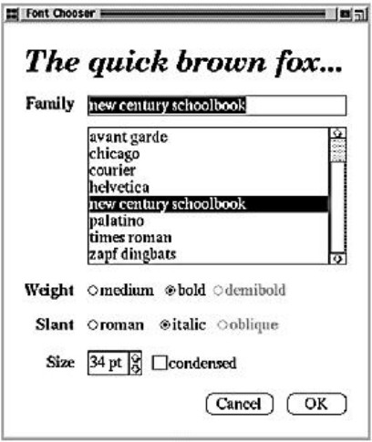
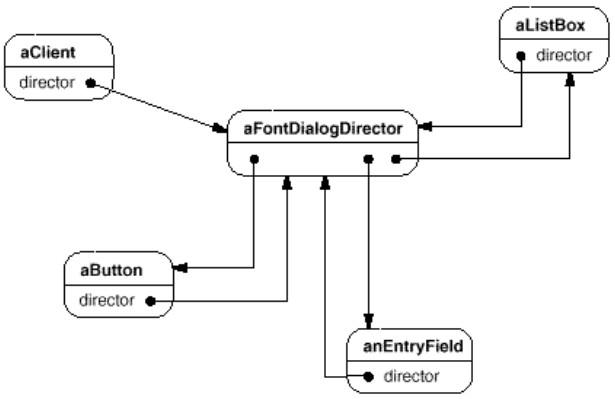
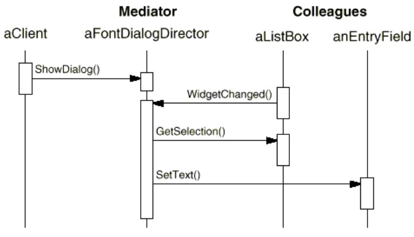
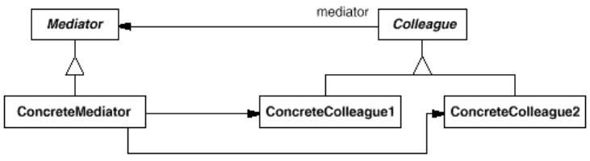

But : Définir un objet qui encapsule comment un ensemble d'objets interagit.
Les objets qui interagissent n'ont plus besoin d'échanger directement avec les autres objets, ce qui permet de faire varier les interaction indépendamment des objets.
Assez proche de Observer.
Exemples
Tour de contrôle
 Les pilotes des avions qui vont atterrir ne communiquent pas entre eux pour savoir comment s'y prendre ;
Les pilotes des avions qui vont atterrir ne communiquent pas entre eux pour savoir comment s'y prendre ;
ils communiquent tous avec la tour de contrôle, qui leur donne en retour des instructions.
L'intelligence permettant de gérer les interactions entre les avions se situe au niveau de la tour.
Les différents avions n'ont pas besoin de se connaître pour pouvoir atterrir, les instructions de la tour suffisent.
Exemple GOF
Autre exemple, dans un dialogue permettant de choisir une police, une action peut avoir des effets sur plusieurs composants graphiques :- Choix d'une police dans la liste => le texte du haut s'affiche dans la police choisie, certains champs de "Weight" ou "Slant" peuvent être désactivés.
- Choix de la taille, de "Weight" ou "Slant" => le texte du haut est mis à jour.
En sous-classant les composants pour gérer les différents types d'interaction, on supprime la possibilité de les réutiliser.
On crée aussi des dépendances fortes entre les composants.


On évite ces problèmes en encapsulant les interaction dans un objet, le mediator.
Par exemple, on pourrait avoir un
FontDialogDirector pour faire le mediator entre les composants du dialogue.
Le
FontDialogDirector connaît les composants, agit comme un hub pour gérer les interactions.
Diagramme de séquence : 
- La liste dit au mediator qu'elle a changé.
- Le mediator lui demande sa nouvelle valeur.
- Le médiator demande au texte de se rafraîchir.
- Le médiator demande à "Weight", puis "Slant", puis "Size" de se rafraîchir (en utilisant les valeurs récupérées en 2).
class Mediator{
public void widgetChanged(Widget w){
switch(w.getClass()){
case Widget1.class : handleWidget1(); break;
case Widget2.class : handleWidget2(); break;
}
}
private void handleWidget1(){
// ici toutes les opérations réagissant à une action de l'utilisateur
// sont réunies en un même endroit
}
}
Si les fonctions du type de handleWidget1() sont longues et complexes, on peut sous-classer Mediator pour mieux ranger le code.
Autre exemple
Voir ChatDemo.javaBien identifier la séquence : lorsqu'un utilisateur envoie un message, il est à l'initiative du message, mais ne fait que transmettre au
ChatMediator, qui a la responsabilité de transmettre le message aux participants concernés.
Structure
Remarques
- Les différents collègues n'ont pas besoin de se connaître, leur seul interloculteur est le mediator.
- Le fait que les collègues ne sont pas couplés facilite leur remplacement.
- Ce pattern remplace des liaisons n-n par des liaisons 1-n, plus simples à comprendre.
-
Le complexité des interactions est transférée dans le mediator.
Le danger est d'obtenir une grosse classe difficile à maintenir. -
la classe abstraite
Mediatorpeut être omise si les composants n'ont qu'un seul mediator.
Liens avec d'autres patterns
-
Une possibilité est d'implémenter un mediator en utilisant le pattern Observer :
Les collègues sont les observables et le mediator est l'observateur.
Lorsqu'un collègue change, il notifie le médiator, qui va alerter les autres collègues.
Cette solution a un inconvénient, tous les collègues sont avertis, même ceux qui n'en ont pas besoin.=> Observer : tous les collègues sont avertis
Mediator : Seuls certains collègues sont avertis -
Mediator fait partie des patterns permettant de découpler un émetteur d'un receveur.
Les autres patterns permettant cela sont :
- Chain of Responsibility (passe une requête à une chaîne potentielle de receveurs).
- Command (spécifie un lien eméteur - receveur avec une sous-classe).
- Observer (fait comme Mediator, mais son application est plus générale et systématique). -
Mediator est similaire à Facade dans le sens où il abstrait des fonctionnalités de classes existantes.
Mais Mediator ajoute des fonctionnalités en gérant les interactions.
Facade n'ajoute pas de fonctionnalités et n'est pas connu par les classes du sous-système.